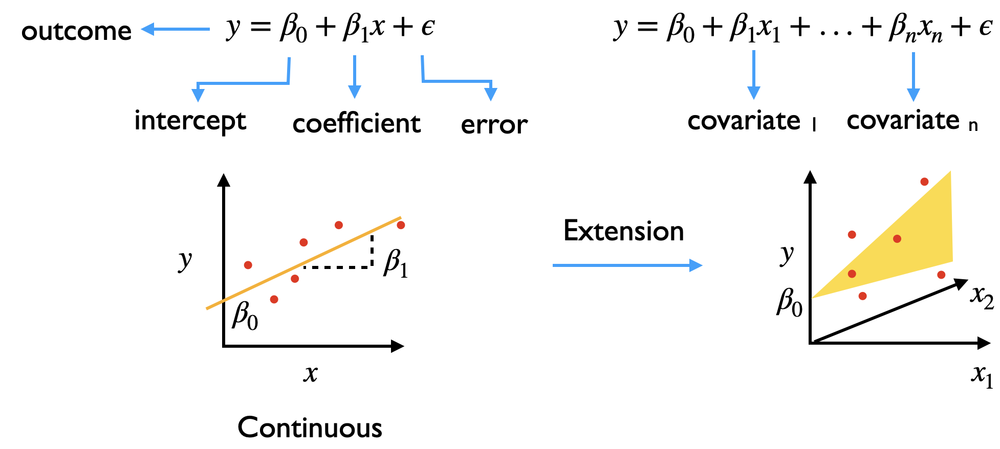
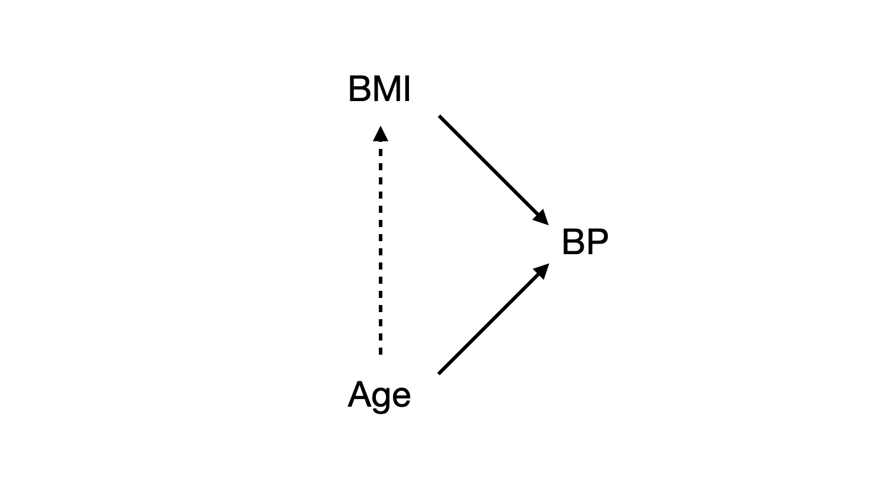
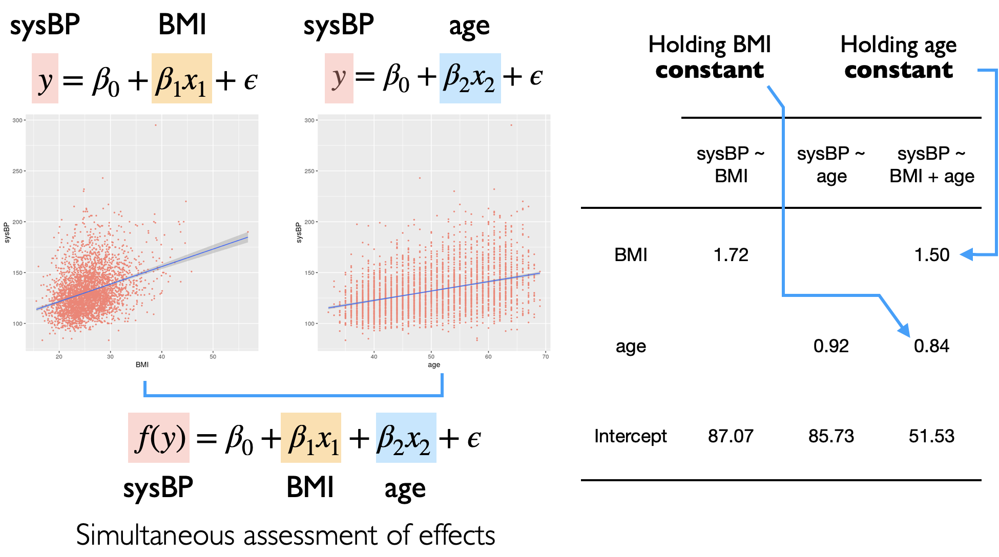

Linear Modeling - Multiple#
We previously considered a single covariate in the linear model and saw how the linear equation could be used to find the coefficients that fit the model by minimizing the sum of squares

The linear model can be extended to accomodate additional covariates as independent variables (i.e. they do not depend on each other)
We will explore
how multiple covariates can be fitted using the linear model
what the addition of covariates means
what problems may arise from selection of covariates
Data preparation#
We will use the dataset from the Framingham study, which was a long term study of cardiovascular disease about subjsects in Framingham, USA. In this dataset ~4000 subjects were followed up and clinical data and chronic heart disease outcomes were examined longitudinally over > 10 years
Variables include:
male: 0 = female, 1 = maleage: Age at the time of medical examination in years.education: 1 = Some high school, 2 = high school/GED, 3 = some college/vocational school, 4 = collegecurrentSmoker: Current cigarette smoking at the time of examinationscigsPerDay: Number of cigarettes smoked each dayBPmeds: Use of Anti-hypertensive medication at examprevalentStroke: Prevalent StrokeprevalentHyp: Prevalent Hypertensivediabetes: Diabetic according to criteria of first exam treatedtotChol: Total cholesterol (mg/dL)sysBP: Systolic Blood Pressure (mmHg)diaBP: Diastolic blood pressure (mmHg)BMI: Body Mass Index, weight (kg)/height (m)^2heartRate: Heart rate (beats/minute)glucose: Blood glucose level (mg/dL)
We will build a model with sysBP as a response and explore its relationship with other variable(s). In this case, we will filter out cases that are on antihypertensive medication BPMeds == 0
Show code cell source
library(tidyverse)
# load data
data<- read_csv("https://raw.githubusercontent.com/kennethban/dataset/main/framingham.csv")
# rename and change data types
data <- data %>%
rename(sex = male) %>%
mutate(sex = as.factor(sex)) %>%
mutate(education = as.factor(education)) %>%
mutate(currentSmoker = as.factor(currentSmoker)) %>%
mutate(BPMeds = as.factor(BPMeds)) %>%
mutate(prevalentStroke = as.factor(prevalentStroke)) %>%
mutate(prevalentHyp = as.factor(prevalentHyp)) %>%
mutate(diabetes = as.factor(diabetes)) %>%
mutate(TenYearCHD = as.factor(TenYearCHD))
# filter out cases with BPMeds and drop missing values
data <- data %>%
filter(BPMeds==0) %>%
drop_na
head(data)
── Attaching core tidyverse packages ───────────────────────────── tidyverse 2.0.0 ──
✔ dplyr 1.1.1 ✔ readr 2.1.4
✔ forcats 1.0.0 ✔ stringr 1.5.0
✔ ggplot2 3.4.2 ✔ tibble 3.2.1
✔ lubridate 1.9.2 ✔ tidyr 1.3.0
✔ purrr 1.0.1
── Conflicts ─────────────────────────────────────────────── tidyverse_conflicts() ──
✖ dplyr::filter() masks stats::filter()
✖ dplyr::lag() masks stats::lag()
ℹ Use the conflicted package (<http://conflicted.r-lib.org/>) to force all conflicts to become errors
Rows: 4240 Columns: 16
── Column specification ─────────────────────────────────────────────────────────────
Delimiter: ","
dbl (16): male, age, education, currentSmoker, cigsPerDay, BPMeds, prevalent...
ℹ Use `spec()` to retrieve the full column specification for this data.
ℹ Specify the column types or set `show_col_types = FALSE` to quiet this message.
| sex | age | education | currentSmoker | cigsPerDay | BPMeds | prevalentStroke | prevalentHyp | diabetes | totChol | sysBP | diaBP | BMI | heartRate | glucose | TenYearCHD |
|---|---|---|---|---|---|---|---|---|---|---|---|---|---|---|---|
| <fct> | <dbl> | <fct> | <fct> | <dbl> | <fct> | <fct> | <fct> | <fct> | <dbl> | <dbl> | <dbl> | <dbl> | <dbl> | <dbl> | <fct> |
| 1 | 39 | 4 | 0 | 0 | 0 | 0 | 0 | 0 | 195 | 106.0 | 70 | 26.97 | 80 | 77 | 0 |
| 0 | 46 | 2 | 0 | 0 | 0 | 0 | 0 | 0 | 250 | 121.0 | 81 | 28.73 | 95 | 76 | 0 |
| 1 | 48 | 1 | 1 | 20 | 0 | 0 | 0 | 0 | 245 | 127.5 | 80 | 25.34 | 75 | 70 | 0 |
| 0 | 61 | 3 | 1 | 30 | 0 | 0 | 1 | 0 | 225 | 150.0 | 95 | 28.58 | 65 | 103 | 1 |
| 0 | 46 | 3 | 1 | 23 | 0 | 0 | 0 | 0 | 285 | 130.0 | 84 | 23.10 | 85 | 85 | 0 |
| 0 | 43 | 2 | 0 | 0 | 0 | 0 | 1 | 0 | 228 | 180.0 | 110 | 30.30 | 77 | 99 | 0 |
We can use the ggpairs from the GGally library to do the pairwise plots and see the relationships between different variables
sysBPBMIage
Show code cell source
library(GGally)
# adjust size of the image output
options(repr.plot.width=8, repr.plot.height=8)
data %>% select(age, sysBP, BMI) %>%
ggpairs() +
theme_grey(base_size=16)
Registered S3 method overwritten by 'GGally':
method from
+.gg ggplot2
Recall that in the previous notebook, we estimated the effect of BMI on systolic BP
fit_BMI <- lm(sysBP ~ BMI, data)
fit_BMI %>% broom::tidy() %>% # tidy up the linear model output
select(term, estimate)
| term | estimate |
|---|---|
| <chr> | <dbl> |
| (Intercept) | 87.068295 |
| BMI | 1.721042 |
Let us get the estimates for the effect of age on systolic BP
fit_age <- lm(sysBP ~ age, data)
fit_age %>% broom::tidy() %>% # tidy up the linear model output
select(term, estimate)
| term | estimate |
|---|---|
| <chr> | <dbl> |
| (Intercept) | 85.7252063 |
| age | 0.9237601 |
When performing regression on the individual covariates (age OR BMI) separately, we are not sure about the contributions of both age and BMI on the systolic BP
For example, if there was an association between age and BMI, the effect of BMI on the systolic BP could be overestimated because we did not account for the effect of age on BMI

The inclusion of both covariates in the model would allow us to address these questions
What is the association of BMI on systolic BP when age is kept constant?
What is the association of age on systolic BP when BMI is kept constant?
We will explore how we can fit both covariates in the model
Solving the linear model using matrices#
We can accomodate additional covariates by extending the linear equation
This can be expressed in a matrix form
More compactly, it can be expressed as
We can obtain the beta coefficients via the following matrix operation that finds the minimum \(SS\).
For details, see https://textbooks.math.gatech.edu/ila/least-squares.html. Also, note the inverse matrix operation \(\left(X^{T} X\right)^{-1}\) that will become relevant later when we consider multiple covariates
As before, we use the lm function for fit a model. We can specify additional covariates by using the + operator
fit_BMI_age <- lm(sysBP ~ BMI + age, data) # fit both BMI + age
fit_BMI_age %>% broom::tidy() %>% # tidy up the linear model output
select(term, estimate)
| term | estimate |
|---|---|
| <chr> | <dbl> |
| (Intercept) | 51.5287670 |
| BMI | 1.4990839 |
| age | 0.8358078 |
From the \(b_0\), \(b_1\) and \(b_2\) coefficients, we have the linear equation relating systolic BP and the covariates BMI and age from the data
These coefficients for BMI and age represent the effect sizes when the other covariate is held constant

We now have estimates of the BMI and age coefficients from the linear model, but we do not know
if the estimates could have arisen by random chance
the range of uncertainty of the coefficients
Analytical approach#
Significance testing of coefficients#
1. Calculate the test statistic#
We will calculate the t-statistic for the coefficients and use them to find the p-values from the null t-distribution
Recall that
The linear equations can be expressed in a matrix form
We would like to find the standard error of the different coefficients, which are based on the variance of the error term \(\epsilon\)
We can then obtain the standard errors for the coefficients
Finally, we obtain the t-statistic for the coefficients that will be used for significance testing
We will use the lm function to obtain the t-statistic for the intercept, BMI and age
Show code cell source
fit <- lm(sysBP ~ BMI + age, data) %>% summary
t_b0 <- fit$coefficients[1,3] # intercept
t_b1 <- fit$coefficients[2,3] # BMI
t_b2 <- fit$coefficients[3,3] # age
tibble(term=c("intercept","BMI","age"),
t_stat=c(t_b0,t_b1,t_b2))
| term | t_stat |
|---|---|
| <chr> | <dbl> |
| intercept | 19.99455 |
| BMI | 18.98957 |
| age | 22.52510 |
2. Use the theoretical null distribution to calculate the p-value#
The null t distribution is parameterized by the degrees of freedom df
df= number of samples - number of parameters
Show code cell source
n <- nrow(data)
num_parameters <- 3 # b0, b1, b2
df <- n - num_parameters
df
We use the vdist_t_prob function from the vistributions library to plot the t-distribution parameterized by df and t-statistic for the intercept, BMI and age
intercept
Show code cell source
library(vistributions)
# adjust size of the image output
options(repr.plot.width=8, repr.plot.height=8)
vdist_t_prob(perc = t_b0, df = df, type="both")
BMI
Show code cell source
vdist_t_prob(perc = t_b1, df = df, type="both")
age
Show code cell source
vdist_t_prob(perc = t_b2, df = df, type="both")
Confidence interval of coefficients#
Recall that the 95% confidence interval is defined as
The lower and upper t-scores are obtained using the qt function
Show code cell source
lower_t_score <- qt(0.025, df = df)
upper_t_score <- qt(0.975, df = df)
tibble(percentile=c("0.025","0.975"),
t_score=c(lower_t_score,upper_t_score))
| percentile | t_score |
|---|---|
| <chr> | <dbl> |
| 0.025 | -1.960634 |
| 0.975 | 1.960634 |
We obtain the coefficient values and their standard errors from the lm object
Show code cell source
b0 <- fit$coefficients[1,1] # intercept
b1 <- fit$coefficients[2,1] # BMI
b2 <- fit$coefficients[3,1] # age
se_b0 <- fit$coefficients[1,2] # intercept
se_b1 <- fit$coefficients[2,2] # BMI
se_b2 <- fit$coefficients[3,2] # age
tibble(type=c("intercept","BMI","age"),
coefficient=c(b0,b1,b2),
std_err=c(se_b0,se_b1,se_b2))
| type | coefficient | std_err |
|---|---|---|
| <chr> | <dbl> | <dbl> |
| intercept | 51.5287670 | 2.57714073 |
| BMI | 1.4990839 | 0.07894250 |
| age | 0.8358078 | 0.03710561 |
intercept
lower: intercept + t_score(0.025) x std error of interceptupper: intercept + t_score(0.975) x std error of intercept
Show code cell source
# 95% CI for b0
b0 + lower_t_score * se_b0
b0 + upper_t_score * se_b0
BMI
lower: BMI + t_score(0.025) x std error of BMIupper: BMI + t_score(0.975) x std error of BMI
Show code cell source
# 95% CI for b1
b1 + lower_t_score * se_b1
b1 + upper_t_score * se_b1
age
lower: age + t_score(0.025) x std error of ageupper: age + t_score(0.975) x std error of age
Show code cell source
# 95% CI for b2
b2 + lower_t_score * se_b2
b2 + upper_t_score * se_b2
Using library functions#
We use the lm function to obtain the estimates and the p-values
fit_BMI_age <- lm(sysBP ~ BMI + age, data)
broom::tidy(fit_BMI_age)
| term | estimate | std.error | statistic | p.value |
|---|---|---|---|---|
| <chr> | <dbl> | <dbl> | <dbl> | <dbl> |
| (Intercept) | 51.5287670 | 2.57714073 | 19.99455 | 2.335230e-84 |
| BMI | 1.4990839 | 0.07894250 | 18.98957 | 1.179596e-76 |
| age | 0.8358078 | 0.03710561 | 22.52510 | 4.052878e-105 |
To get the confidence intervals of the coefficients, we use the confint function on the lm object
confint(fit_BMI_age)
| 2.5 % | 97.5 % | |
|---|---|---|
| (Intercept) | 46.4759383 | 56.5815957 |
| BMI | 1.3443066 | 1.6538612 |
| age | 0.7630573 | 0.9085583 |
How well does the model fit the data?#
We can assess how well the model fits the data by looking at
goodness of fit measures: \(R^2\) and adjusted \(R^2\)
diagnostic plots of the residuals after fitting
1. \(R^2\) and adjusted \(R^2\)#
We can estimate the goodness of fit of the model to the data by looking at the \(R^2\) and adjusted \(R^2\)
Show code cell source
summary(fit_BMI_age)$r.squared
summary(fit_BMI_age)$adj.r.squared
We can see that the \(R^2\) has increased compared to the single covariate fit (BMI only), indicating that the additional covariate (age) improved the fit to the data
Show code cell source
summary(fit_BMI)$r.squared
summary(fit_BMI)$adj.r.squared
2. Diagnostic plot of residuals#
We can look at the plot of residuals
library(ggfortify)
# adjust size of the image output
options(repr.plot.width=10, repr.plot.height=5)
autoplot(fit_BMI_age, which = 1:2)

Most residuals are centered around 0 and the QQ plot shows that that the residuals are closer to a normal distribution except for the higher values and outliers
We can compare this to the previous fit with only BMI as the covariate
# adjust size of the image output
options(repr.plot.width=10, repr.plot.height=5)
autoplot(fit_BMI, which = 1:2)
Application: Statistical table and plotting#
We will be using these libraries for making statistical tables and plots for the linear models
stargazer: statistical tables for modelsggstatsplot: plotting of the model coefficientsggfortify: diagnostic plots for models
To illustrate how we use them, we will build several models looking at the relationship between sysBP and BMI andage variables in the Framingham dataset
library(tidyverse)
# load data
data<- read_csv("https://raw.githubusercontent.com/kennethban/dataset/main/framingham.csv")
# rename and change data types
data <- data %>%
rename(sex = male) %>%
mutate(sex = as.factor(sex)) %>%
mutate(education = as.factor(education)) %>%
mutate(currentSmoker = as.factor(currentSmoker)) %>%
mutate(BPMeds = as.factor(BPMeds)) %>%
mutate(prevalentStroke = as.factor(prevalentStroke)) %>%
mutate(prevalentHyp = as.factor(prevalentHyp)) %>%
mutate(diabetes = as.factor(diabetes)) %>%
mutate(TenYearCHD = as.factor(TenYearCHD))
# filter out cases with BPMeds and drop missing values
data <- data %>%
filter(BPMeds==0) %>%
drop_na
head(data)
Rows: 4240 Columns: 16
── Column specification ─────────────────────────────────────────────────────────────
Delimiter: ","
dbl (16): male, age, education, currentSmoker, cigsPerDay, BPMeds, prevalent...
ℹ Use `spec()` to retrieve the full column specification for this data.
ℹ Specify the column types or set `show_col_types = FALSE` to quiet this message.
| sex | age | education | currentSmoker | cigsPerDay | BPMeds | prevalentStroke | prevalentHyp | diabetes | totChol | sysBP | diaBP | BMI | heartRate | glucose | TenYearCHD |
|---|---|---|---|---|---|---|---|---|---|---|---|---|---|---|---|
| <fct> | <dbl> | <fct> | <fct> | <dbl> | <fct> | <fct> | <fct> | <fct> | <dbl> | <dbl> | <dbl> | <dbl> | <dbl> | <dbl> | <fct> |
| 1 | 39 | 4 | 0 | 0 | 0 | 0 | 0 | 0 | 195 | 106.0 | 70 | 26.97 | 80 | 77 | 0 |
| 0 | 46 | 2 | 0 | 0 | 0 | 0 | 0 | 0 | 250 | 121.0 | 81 | 28.73 | 95 | 76 | 0 |
| 1 | 48 | 1 | 1 | 20 | 0 | 0 | 0 | 0 | 245 | 127.5 | 80 | 25.34 | 75 | 70 | 0 |
| 0 | 61 | 3 | 1 | 30 | 0 | 0 | 1 | 0 | 225 | 150.0 | 95 | 28.58 | 65 | 103 | 1 |
| 0 | 46 | 3 | 1 | 23 | 0 | 0 | 0 | 0 | 285 | 130.0 | 84 | 23.10 | 85 | 85 | 0 |
| 0 | 43 | 2 | 0 | 0 | 0 | 0 | 1 | 0 | 228 | 180.0 | 110 | 30.30 | 77 | 99 | 0 |
1. Statistical table#
We will use the stargazer function from the stargazer library to generate a statistical table from the model. The function can take one or more models as its input and we can specify the following options
ci: set to TRUE to print the confidence intervalstype: set to HTML to print the table in the notebook
We will define a local function print_html to print the HTML output from stargazer in the notebook
# print table convenience function
print_html <- function(input) {
capture.output(input) %>%
paste(collapse="") %>%
IRdisplay::display_html()
}
We will fit several models and print them in a table
fit_BMI <- lm(sysBP ~ BMI, data)
fit_age <- lm(sysBP ~ age, data)
fit_BMI_age <- lm(sysBP ~ BMI + age, data)
# print stargazer table and compare all 3 models
library(stargazer)
stargazer(fit_BMI, fit_age, fit_BMI_age, ci=TRUE, type="html") %>% print_html
Please cite as:
Hlavac, Marek (2022). stargazer: Well-Formatted Regression and Summary Statistics Tables.
R package version 5.2.3. https://CRAN.R-project.org/package=stargazer
| Dependent variable: | |||
| sysBP | |||
| (1) | (2) | (3) | |
| BMI | 1.721*** | 1.499*** | |
| (1.557, 1.885) | (1.344, 1.654) | ||
| age | 0.924*** | 0.836*** | |
| (0.848, 0.999) | (0.763, 0.909) | ||
| Constant | 87.068*** | 85.725*** | 51.529*** |
| (82.799, 91.338) | (81.933, 89.517) | (46.478, 56.580) | |
| Observations | 3,547 | 3,547 | 3,547 |
| R2 | 0.106 | 0.139 | 0.218 |
| Adjusted R2 | 0.106 | 0.139 | 0.218 |
| Residual Std. Error | 19.946 (df = 3545) | 19.581 (df = 3545) | 18.657 (df = 3544) |
| F Statistic | 422.468*** (df = 1; 3545) | 571.608*** (df = 1; 3545) | 495.098*** (df = 2; 3544) |
| Note: | *p<0.1; **p<0.05; ***p<0.01 | ||
2. Statistical plot#
We will use the ggcoefstats function from ggstatsplot to generate a plot of the coefficients with the confidence intervals and the associate p-values. We can specify the following options
exclude.intercept: set to TRUE to omit the interceptstats.label.args: provide a list of options for the labels if desired
library(ggstatsplot)
# adjust size of the image output
options(repr.plot.width=8, repr.plot.height=8)
fit_BMI_age %>% ggcoefstats(exclude.intercept = T,
stats.label.args=list(nudge_y=0.2,
size=5,
label.size=NA)) +
theme_grey(base_size=16)
You can cite this package as:
Patil, I. (2021). Visualizations with statistical details: The 'ggstatsplot' approach.
Journal of Open Source Software, 6(61), 3167, doi:10.21105/joss.03167
3. Diagnostic plot#
We will use the autoplot function from the ggfortify library to generate basic diagnostic plots of the residuals. For simplicity, we specify the option which = 1:2 to limit the plots to
Residuals vs Fitted
Normal Q-Q
library(ggfortify)
# adjust size of the image output
options(repr.plot.width=10, repr.plot.height=5)
autoplot(fit_BMI_age, which = 1:2)
Exercise - Modeling (Multiple covariates)#
For this exercise, we will use the Framingham dataset and model the relationship between totChol and 2 covariates BMI and age
library(tidyverse)
# load data
data<- read_csv("https://raw.githubusercontent.com/kennethban/dataset/main/framingham.csv")
# rename and change data types
data <- data %>%
rename(sex = male) %>%
mutate(sex = as.factor(sex)) %>%
mutate(education = as.factor(education)) %>%
mutate(currentSmoker = as.factor(currentSmoker)) %>%
mutate(BPMeds = as.factor(BPMeds)) %>%
mutate(prevalentStroke = as.factor(prevalentStroke)) %>%
mutate(prevalentHyp = as.factor(prevalentHyp)) %>%
mutate(diabetes = as.factor(diabetes)) %>%
mutate(TenYearCHD = as.factor(TenYearCHD))
# filter out cases with BPMeds and drop missing values
data <- data %>%
filter(BPMeds==0) %>%
drop_na
head(data)
Rows: 4240 Columns: 16
── Column specification ─────────────────────────────────────────────────────────────
Delimiter: ","
dbl (16): male, age, education, currentSmoker, cigsPerDay, BPMeds, prevalent...
ℹ Use `spec()` to retrieve the full column specification for this data.
ℹ Specify the column types or set `show_col_types = FALSE` to quiet this message.
| sex | age | education | currentSmoker | cigsPerDay | BPMeds | prevalentStroke | prevalentHyp | diabetes | totChol | sysBP | diaBP | BMI | heartRate | glucose | TenYearCHD |
|---|---|---|---|---|---|---|---|---|---|---|---|---|---|---|---|
| <fct> | <dbl> | <fct> | <fct> | <dbl> | <fct> | <fct> | <fct> | <fct> | <dbl> | <dbl> | <dbl> | <dbl> | <dbl> | <dbl> | <fct> |
| 1 | 39 | 4 | 0 | 0 | 0 | 0 | 0 | 0 | 195 | 106.0 | 70 | 26.97 | 80 | 77 | 0 |
| 0 | 46 | 2 | 0 | 0 | 0 | 0 | 0 | 0 | 250 | 121.0 | 81 | 28.73 | 95 | 76 | 0 |
| 1 | 48 | 1 | 1 | 20 | 0 | 0 | 0 | 0 | 245 | 127.5 | 80 | 25.34 | 75 | 70 | 0 |
| 0 | 61 | 3 | 1 | 30 | 0 | 0 | 1 | 0 | 225 | 150.0 | 95 | 28.58 | 65 | 103 | 1 |
| 0 | 46 | 3 | 1 | 23 | 0 | 0 | 0 | 0 | 285 | 130.0 | 84 | 23.10 | 85 | 85 | 0 |
| 0 | 43 | 2 | 0 | 0 | 0 | 0 | 1 | 0 | 228 | 180.0 | 110 | 30.30 | 77 | 99 | 0 |
We will define a local function print_html to print the HTML output from stargazer in the notebook
# print html convenience function
print_html <- function(input) {
capture.output(input) %>%
paste(collapse="") %>%
IRdisplay::display_html()
}
Part 1#
Build a linear model using the lm function and store it as myfit_BMI
totChol: dependent/response variableBMI: independent/explanatory variable
Build a linear model using the lm function and store it as myfit_age
totChol: dependent/response variableage: independent/explanatory variable
Build a linear model using the lm function and store it as myfit_BMI_age
totChol: dependent/response variableBMI: independent/explanatory variableage: independent/explanatory variable
Create a stargazer table that shows 3 models side-by-side
Explain the coefficients
Explain which model may be a better fit to the data
library(stargazer)
# start here
Show code cell content
# solution
library(stargazer)
myfit_BMI <- lm(totChol ~ BMI, data)
myfit_age <- lm(totChol ~ age, data)
myfit_BMI_age <- lm(totChol ~ BMI + age, data)
stargazer(myfit_BMI, myfit_age, myfit_BMI_age, ci = T, type="html") %>% print_html
| Dependent variable: | |||
| totChol | |||
| (1) | (2) | (3) | |
| BMI | 1.219*** | 0.868*** | |
| (0.861, 1.577) | (0.519, 1.217) | ||
| age | 1.372*** | 1.321*** | |
| (1.209, 1.536) | (1.157, 1.485) | ||
| Constant | 204.776*** | 168.391*** | 148.588*** |
| (195.458, 214.093) | (160.216, 176.567) | (137.196, 159.979) | |
| Observations | 3,547 | 3,547 | 3,547 |
| R2 | 0.012 | 0.071 | 0.077 |
| Adjusted R2 | 0.012 | 0.071 | 0.077 |
| Residual Std. Error | 43.528 (df = 3545) | 42.214 (df = 3545) | 42.079 (df = 3544) |
| F Statistic | 44.506*** (df = 1; 3545) | 271.435*** (df = 1; 3545) | 148.477*** (df = 2; 3544) |
| Note: | *p<0.1; **p<0.05; ***p<0.01 | ||
Part 2#
Use ggcoefstats to plot the coefficient(s) in the myfit_BMI_age model. You may exclude the intercept from the plot
library(ggstatsplot)
# start here
Show code cell content
# solution
library(ggstatsplot)
# set plot dimensions
options(repr.plot.width=8, repr.plot.height=8)
myfit_BMI_age %>% ggcoefstats(exclude.intercept = T)
Part 3#
Create a diagnostic plot for the myfit_bmi_age model using autoplot from ggfortify
Interpret the plot
library(ggfortify)
# start here
Show code cell content
# solution
library(ggfortify)
# set plot dimensions
options(repr.plot.width=8, repr.plot.height=4)
myfit_BMI_age %>% autoplot(which=1:2)